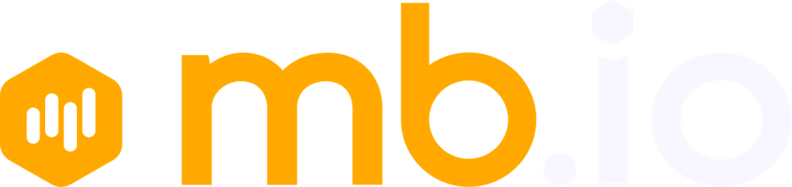

Lead DesignerAt mb.io, AI does the first drafts, the variants and the reporting. My time goes to the decisions that need a designer.
At mb.io I run video and image generation through Higgsfield, including Kling, Seedance and Google Veo, for campaigns like the Khabib work. Product videos, key frames and variant testing that used to take a full production cycle.
At mb.io every creative I ship is logged in a tracker I built with Claude Code. Calendar, charts and one-click reports for the CMO. See the tracker.
I use Hermes Agent and Claude's agentic tooling for research, drafting and multi-step jobs: brief to first draft, data to report. Judgment stays with me. Volume goes to the agents.